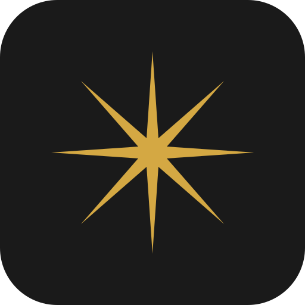

Vector Icon
Clean SVG neural asterisk — mathematically constructed, infinitely scalable.
Gemini Raster vs Clean Vector

Gemini PNG (original)

Clean SVG (vector)
Ray Width Variations
Dialing in the taper. Thinner = more delicate/precise. Thicker = more bold/confident.
Thin (6px)
Delicate, precise. More like a compass rose.
Medium (9px)
Balanced. Close to the Gemini original.
Bold (12px)
Confident, solid. Current default.
Heavy (16px)
Chunky, fills more space. Better at tiny sizes.
Ray Count
Fewer rays = more distinctive. More = denser, star-like.
6 Rays
Original prompt. Hexagonal feel.
8 Rays (current)
Matches Gemini output. Compass-like.
4 Rays (Cardinal)
Plus/cross shape. Maximum simplicity.
4 Rays (Diagonal)
X shape. More dynamic, less static.
Size Ladder
Wordmark Lockups (Newsreader)
The neural asterisk paired with "cortex" in Newsreader at different scales.
cortex
Header / Marketing — 32px
cortex
Sidebar — 20px
cortex
Compact — 15px
In Context
SVG Files
neural-asterisk.svg — Mark only, no background (512x512)
cortex-icon-dark.svg — App icon with dark rounded rect (512x512)
cortex-favicon.svg — Favicon optimized (32x32)
{kind=link}
cortex-icon-dark.svg — App icon with dark rounded rect (512x512)
{kind=link}
cortex-favicon.svg — Favicon optimized (32x32)
{kind=link}